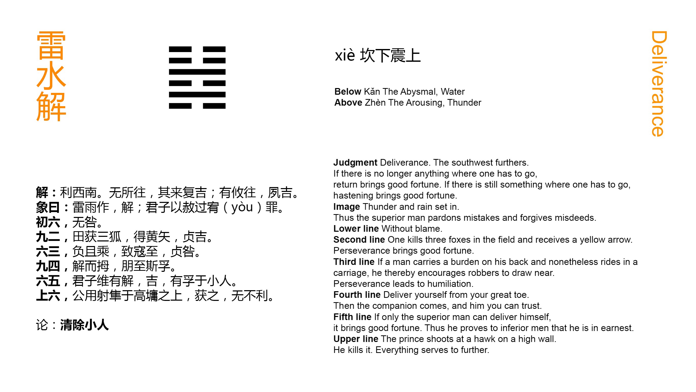

Chinese: 解 ䷧ xiè / jiě

In (the state indicated by) Xiè ䷧ advantage will be found in the south-west. If no (further) operations be called for, there will be good fortune in coming back (to the old conditions). If some operations be called for, there will be good fortune in the early conducting of them.
1. The first SIX, divided, shows that its subject will commit no error.
䷧ changing to ䷵
Matching Line 1 in Adjacent Hexagram: ䷦
2. The second NINE, undivided, shows its subject catch, in hunting, three foxes, and obtain the yellow (= golden) arrows. With firm correctness there will be good fortune.
䷧ changing to ䷏
Matching Line 2 in Adjacent Hexagram: ䷦
3. The third SIX, divided, shows a porter with his burden, (yet) riding in a carriage. He will (only) tempt robbers to attack him. However firm and correct he may (try to) be, there will be cause for regret.
䷧ changing to ䷟
Matching Line 3 in Adjacent Hexagram: ䷦
4. (To the subject of) the fourth NINE, undivided, (it is said), 'Remove your toes. Friends will (then) come, between you and whom there will be mutual confidence.'
䷧ changing to ䷆
Matching Line 4 in Adjacent Hexagram: ䷦
5. The fifth SIX, divided, shows (its subject), the superior man (= the ruler),
executing his function of removing (whatever is injurious to the idea of the hexagram), in which case there will he good fortune, and confidence in him will be shown even by the small men.
䷧ changing to ䷮
Matching Line 5 in Adjacent Hexagram: ䷦
6. In the sixth SIX, divided, we see a feudal prince (with his bow) shooting at a falcon on the top of a high wall, and hitting it. (The effect of his action) will be in every way advantageous.
䷧ changing to ䷿
Matching Line 6 in Adjacent Hexagram: ䷦
Xiè ䷧ is the symbol of loosing, -- untying a knot or unravelling a complication; and as the name of this hexagram, it denotes a condition in which the obstruction and difficulty indicated by the preceding Xiè ䷧ have been removed. The object of the author is to show, as if from the lines of the figure, how this new and better state of the kingdom is to be dealt with. See what is said on the Tuàn of Jiǎn ䷦ for 'the advantage to be found in the south-west.' If further active operations be not necessary to complete the subjugation of the country, the sooner things fall into their old channels the better. The new masters of the kingdom should not be anxious to change all the old manners and ways. Let them do, as the duke of Zhou actually did do with the subjugated people of Shāng. If p. 146 further operations be necessary, let them be carried through without delay. Nothing is said in the Tuàn about the discountenancing and removal of small men, -- unworthy ministers or officers; but that subject appears in more! than one of the lines.
There is a weak line, instead of a strong, in the first place; but this is compensated for by its strong correlate in 4.
Zhū Xī says he does not understand the symbolism under line 2. The place is even, but the line itself is strong; the strength therefore is modified or tempered. And 2 is the correlate of the ruler in 5. We are to look to its subject therefore for a minister striving to realise the idea of the hexagram, and pacify the subdued kingdom. He becomes a hunter, and disposes of unworthy men, represented by 'the three foxes.' He also gets the yellow arrows, the instruments used in war or in hunting, whose colour is 'correct,' and whose form is 'straight.' His firm correctness will be good.
Line 3 is weak, when it should be strong; and occupying, as it does, the topmost place of the lower trigram, it suggests the symbolism of a porter in a carriage. People will say, 'How did he get there? The things cannot be his own.' And robbers will attack and plunder him. The subject of the line cannot protect himself, nor accomplish anything good.
What is said on the fourth line appears in the form of an address to its subject. The line is strong in an even place, and 1, its correlate, is weak in an odd place. Such a union will not be productive of good. In the symbolism 1 becomes the toe of the subject of 4. How the friend or friends, who are to come to him on the removal of this toe, are represented, I do not perceive.
Line 5 is weak in an odd place; but the place is that of the ruler, to whom it belongs to perfect the idea of the hexagram by p. 147 removing all that is contrary to the peace and good order of the kingdom. It will be his duty to remove especially all the small men represented by the divided lines, which he can do with the help of his strong correlate in 2. Then even the small men will change their ways, and repair to him.
Line 6 is the highest line in the figure, but not the place of the ruler. Hence it appears as occupied by a feudal duke, who carries out the idea of the figure against small men, according to the symbolism employed.